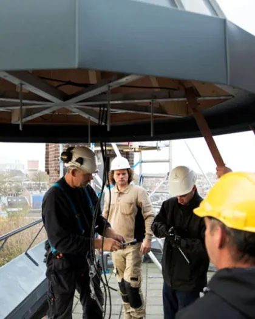

Over ons
Drie generaties. Eén visie.
Timmer- en onderhoudsbedrijf Versteeg is sinds 2002 actief in nieuwbouw, verbouw, renovatie en restauratie, vanuit De Meern. Typerend is de informele, persoonlijke benadering.
"Versteeg heeft een achtergrond in de restauratie en renovatie. Dat is precisiewerk waarbij het aankomt op details. Op zorgvuldigheid en perfectie. Dat zie je bij ons overal terug: het zit in ons DNA."
LeerbedrijfErkend leerbedrijf, met stageplaatsen voor jonge medewerkers
PartnersZo nodig schakelt Versteeg experts van buiten in
Werken bijOpen sollicitaties zijn altijd welkom
Plannen voor uw huis of pand?
Vertel wat u wilt. Versteeg zoekt precies uit wat u bedoelt en denkt mee.